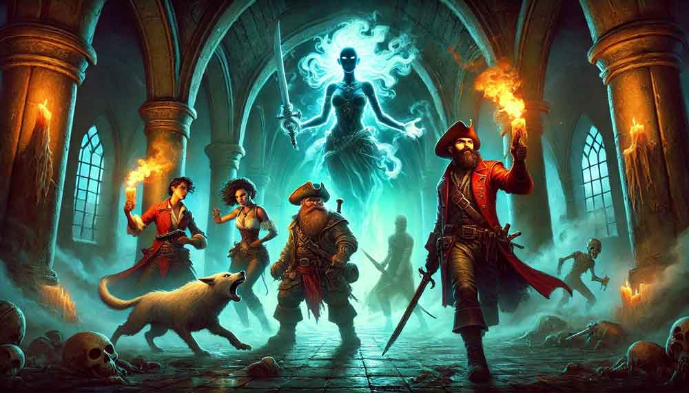
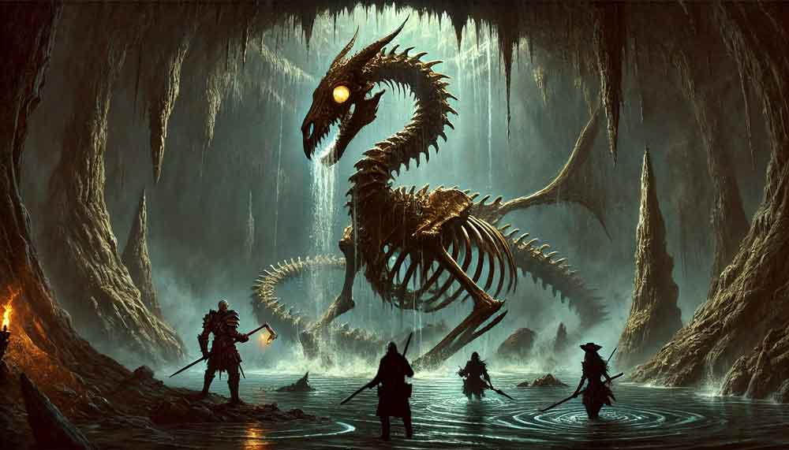

Tales From the High Sea!
Book 6: From Hell's Heart
December 31, 2024
Storm on the Horizon

The smell of blood and spells still lingered in the air as the officers of the Scourge’s Bane surveyed their grim prize. The storm of battle had passed, but the true tempest loomed ahead. Blood and smoke marked their victory, but what they uncovered within the crumbling stronghold promised no respite.
Their search through the fort revealed treasures, plunder, and hidden compartments. Yet it was not the gold nor the rare trinkets that chilled them—it was the papers. Letters sealed with the infernal red of Cheliax, bearing the unmistakable hand of Admiral Thrune herself. Varen spread the documents across a cracked wooden table, reading aloud the damning words.
"Harrigan was the traitor," he murmured, his voice taut with disbelief. "Thrune’s puppet. The staged raids, the captured ships, all orchestrated to bolster Cheliax’s might in the Shackles." He let the final page fall, his piercing gaze meeting Kasmira’s. "And we were his primary target. Stealing the Wormwood painted a bullseye on our backs."
Finn let out a low whistle. "So much for retiring to a quiet port."
"Retire?" Red grunted, hefting his axe over one shoulder. "Not until we’ve buried this entire Chelish armada."
Their exploration unearthed one more enigma—a basin of clear, still water etched with arcane symbols. Varen’s sharp eyes narrowed as he examined it. “A scrying font,” he said, awe and caution mingling in his voice. Before the others could respond, the water stirred, spiraling upward. A figure emerged, her image forming in cruel clarity.
Admiral Thrune stood before them, her Chelish navy uniform crisp, her smile as sharp as the daggers concealed within her words. "So, these are the pests that have gnawed at Harrigan’s leash," she sneered. "Submit to Thrune, and perhaps I’ll find use for you. Refuse, and you’ll sink with the rest of the Shackles."
Finn smirked. "Pests? I’ve been called worse by better."
But Thrune’s laughter echoed, cold as iron chains, before the water exploded in a surge of magical energy. The basin shattered, leaving only silence and the stench of ozone. Kasmira wiped debris from her coat, one eyebrow arched. "What the hell was that?"
"A message," Varen replied grimly. "And a declaration of war."
The officers wasted no time. With the Scourge’s Bane and the captured Wormwood left to secure the fort, Varen gathered his companions. A few whispered incantations later, they stood before the grand villa of Tessa Fairwind in Quent. Tessa greeted them with a mix of curiosity and concern, her sharp eyes sweeping over their battle-worn forms.
After Kasmira recounted the events at Gannet Island, including the ominous encounter with Thrune, Tessa’s expression darkened. "We need to call an emergency council," she said, her voice steady despite the weight of her words. "The Free Captains must hear this."
Varen’s magic whisked them to Port Peril, where they sought an audience with the Hurricane King himself, Kerdak Bonefist. The wait was interminable, their frustration mounting as the minutes crawled by. When finally admitted, their arguments and evidence were met with Kerdak’s stony indifference.
"And how do I know this isn’t fabricated?" he growled, dismissing the damning letters with a wave of his hand. "You defeated Harrigan. Why sully his name further?"
Kasmira’s fury ignited. "You call this slander?" she spat. "Harrigan’s whip scars our backs—ask anyone here! These plans are real, and if you ignore them, you’ll doom the Shackles!"
Kerdak’s expression remained impassive. "The Eye of Abendego will tear their fleet to shreds before they reach us. We’ll defend our ports and destroy what’s left."
"They’re already through the Eye," Kasmira countered. But the Hurricane King’s mind was set. With a final dismissive gesture, he left, leaving the companions seething.
The following week dragged on as the Free Captains trickled into Port Peril. When the council finally convened, Kerdak repeated his stance, his voice rising above the protests. "Meeting the Chelish fleet in open waters is suicide! We’ll defend our ports, and that is final. Anyone who sails out to meet this fleet should be considered a traitor!"
But the murmurs of dissent began to swell, captains questioning Kerdak’s resolve. Kasmira seized the moment, her voice cutting through the discontent. "If Kerdak won’t act, someone must. The Chelish fleet won’t wait, and neither can we."
Tessa Fairwind stepped forward, her gaze blazing with determination. "I’ll follow you, Kasmira. I’ll pledge my ships to your cause. And if you succeed, I’ll support a claim for any one of you to seize the Hurricane Crown."
One by one, the voices of support rose. Arronax Endymion pledged his fleet, his booming voice a rallying cry. The Master of Gales, though weary, vowed to stand by their side. The tide had turned, and the companions were no longer isolated rebels—they were leaders of a growing resistance.
As the hall buzzed with urgency, Kasmira turned to her companions, her resolve hard as steel. "Get your ships ready. We sail to hunt a Chelish armada."
Outside, the winds howled like the roar of an angry sea, as if the Shackles themselves knew the storm that was coming.
January 4, 2025
The Battle for the Shackles

Rumors of war reached Kasmira de la Torre like the ominous whispers of an oncoming storm. The Chelish armada had finally emerged from the Eye of Abendego, a relentless force of warships and devils tearing through the Shackles with merciless precision. Drenchport fell first, a harrowing confirmation of the Master of Gales’ fears. The devils teleported into the city, spreading fiery devastation, while Chelish cannons sent the Shackles fleet to the depths. But Kasmira wasn’t one to mourn in inaction. Her fleet pulled anchor as soon as the grim news reached them, bound northward to intercept the Chelish forces before they reduced the Shackles to cinders.
Two days of tense sailing passed as Kasmira and her crew watched the distant towns fall through scrying spells. Arena, bereft of a defensive fleet, crumbled swiftly under Thrune’s assault. Chalk Harbor was next, attacked in the predawn hours of their second day at sea. The devastation was merciless, and Kasmira’s resolve hardened. By dawn, her fleet sailed toward the next target: Hell Harbor.
As they prepared to block Thrune’s advance, a lookout’s cry broke the morning stillness. “Ships ahoy! And a lot of them!” From the crow’s nest, the silhouette of the Chelish fleet loomed on the horizon. Kasmira’s voice cut through the rising tension. “Full sails! Hit them fast and hard!” At her command, the Master of Gales summoned a gale that hurled their ships forward, the wind itself heeding their call to battle.
The Chelish armada reeled in surprise, their warships scrambling to meet the Shackles fleet. As their vessels drew closer, Kasmira muttered to herself, “We’re outnumbered. And half their fleet is warships.” Her jaw tightened. “This won’t be easy.”
What followed was a clash of titans. Warships thundered with cannon fire, sending Shackles vessels to the ocean floor. Kasmira’s fleet, undeterred, executed precise maneuvers under her command. Jerrell and Pegsworthy’s squadrons encircled and annihilated a group of Chelish warships, while Red’s Revenge and Tidewater delivered crippling blows to another. Slowly, the tide turned. Shackles captains seized every opportunity, and as mutiny spread among the Chelish ranks, entire squadrons fled the fray.
The remnants of Thrune’s once-mighty armada faltered. Kasmira spotted the Chelish flagship, Abrogail’s Fury, still holding formation. A cry from the deck turned her attention skyward. “Devils incoming!” From the crow’s nest, Varen Galashantar’s musket echoed as he fired at the approaching creatures. But something felt wrong. The devils shimmered unnaturally, revealing themselves as illusions just as the true threat materialized on the deck in a burst of infernal magic.
The battle became chaos. Devils attacked with vicious precision. One dropped a feather token that halted the Scourge’s Bane mid-motion, throwing the crew off balance. Kasmira dodged an attack and fired her pistols, while Red’s axe cleaved through fiendish flesh. Varen’s musket sang from the crow’s nest, and Finn’s telekinetic blasts sent foes sprawling. Yet even as devils fell, one managed to grab Kasmira and fly away with her grasped in its clawed arms. Varen’s musket silenced the devil mid-flight, and Kasmira fell to the ocean. Varen, tossing the magic anchor feather token overboard, ordered the Bane forward, picking up Kasmira, fury burning in her eyes. “Take us to that ship!” she ordered, pointing at Abrogail’s Fury.
With Varen’s teleportation spell, the group materialized on the enemy flagship’s stern deck. There, Admiral Thrune awaited, flanked by a Hellknight and towering devils. The air turned heavy as the fiends unleashed magic, forcing water into their lungs. Kasmira and Red struggled to breathe, retching and fighting through the pain. Paralictor Valeria Asperixus, Thrune’s fearsome bodyguard, struck Kasmira with a bardiche, the Admiral of the Shackles barely dodging death.
Varen cast a spell, enlarging Red into a towering force of vengeance. Musket fire rained down on him, but the giant dwarf pressed forward, cutting through devils with his axe. Finn turned invisible, unleashing telekinetic blasts that sent marines sprawling. Varen, his musket precision unwavering, took down marines and fiends alike while conjuring a force wall to shield his allies from further musket fire.
The Hellknight’s relentless assault pressed Kasmira to her limits, but Varen’s spell turned her invisible, giving her a moment to recover. As the Shackles captains rallied, the tide turned once more. Finn’s magic weakened their foes, Red’s axe felled fiends, and Varen’s spells and musket ensured their enemies’ defeat. One by one, the devils and marines fell, leaving only Admiral Thrune. She tried to retreat, but Kasmira’s pistols fired the final shots, ending her reign of terror.
The battle was over. The Shackles fleet, battered but victorious, gathered to celebrate their triumph. The pirate lords hailed Kasmira and her companions as heroes, their unity and daring ensuring the freedom of the Shackles. Tessa Fairwind’s voice cut through the cheers, calling for new leadership to replace the complacent Hurricane King. The gathered captains echoed her sentiment, their eyes turning to the four offices of the Scourge’s Bane. The future of the Shackles hung in the balance, and destiny awaited.
January 11, 2025
The Assault on Fort Hazard

The sea breeze whispered through the darkness, carrying the faint tang of salt and danger as the group materialized on the outskirts of the island of Lucrehold. Beneath the shadow of Fort Hazard, the legendary fortress of the Hurricane King, Kasmira, Varen, Red, and Finn moved like specters toward the nondescript warehouse that would serve as their entry point into the depths of pirate history. The plans they had stolen from Barnabas Harrigan had led them here—a secret entrance below the warehouse, winding through sea caves, a path meant for assassination.
Varen’s voice was low, steady, and clipped. “Stay quiet. We’re too close to slip now.” His musket gleamed faintly in the moonlight, a sentinel of steel and powder. The four crept toward a side door, Kasmira’s quick hands making short work of the lock as they stepped into the shadowed halls of the warehouse.
The air inside was stale, the silence oppressive. Offices and storerooms lined the hallway, their emptiness a grim prelude to the challenge ahead. Finn, cloaked in invisibility, slipped ahead, his footsteps soundless as he entered the main floor of the warehouse. But silence was not safety. The mechanical clatter of gears was the only warning before two hulking golems emerged from the shadows, ship’s cannons strapped to one arm. Finn barely had time to react as cannonballs ripped through the air, striking him with bone-shattering force. He crumpled to the ground, blood pooling beneath him.
“Finn!” Kasmira’s voice was sharp, edged with panic. She sprinted into the fray, ducking behind crates as Red knelt beside their fallen comrade. Magic flared from the dwarf’s hands, warmth and light knitting Finn’s wounds, dragging him back from the brink of death. Varen raised his musket, the crack of his shot echoing in the cavernous space. Yet, the golems were relentless, their iron bodies shrugging off musket balls and pistol fire alike.
Kasmira’s pistols roared, and Varen’s musket thundered again and again. Red, a stalwart wall against the onslaught, absorbed the brunt of the cannon fire. Slowly, methodically, they wore the constructs down until both golems collapsed in heaps of twisted metal. Breathing hard, the four regrouped, their faces pale but determined.
“We need to move,” Varen urged, his tone brooking no argument. They pressed deeper into the warehouse, finding a trapdoor hidden beneath a tun of rum. Finn’s telekinetic powers gently moved the barrel aside, revealing a passage leading into darkness.
The air grew colder as they descended, the walls slick with brine. Blue-green light flickered ahead, illuminating a statue of Besmara, the pirate goddess. Her hair was aflame with ghostly light, casting eerie shadows on the walls. The crypt stretched before them, ancient and foreboding, the floor marked by dried bloodstains that spoke of forgotten violence.
As they ventured deeper, the dead rose to greet them. Ravenous undead surged from burial niches, their claws sapping strength with each touch. Mist coalesced into ghostly hounds that howled as they attacked. Red’s divine magic flared, banishing the incorporeal beasts, while Kasmira and Varen’s bullets found their mark with deadly precision. Finn’s powers lashed out, scattering the undead in waves of force. The group stood triumphant but shaken as the last of the dead crumbled to dust.
Beyond the crypt, they found a waterlogged chamber. Six draugr captains rose from the depths, their burning eyes filled with hatred. Axes swung, gunpowder flashed, and magic crackled in the damp air. The fight was brutal but brief, the undead captains no match for the group’s combined might.
The plans from Harrigan’s room led them to a secret door, opening into a large chamber filled with crates and barrels. But danger lurked again—two more cannon golems stood guard. The team engaged, their tactics honed by the earlier battle. This time, they fought with precision, avoiding the devastating cannon fire. The golems fell, and the group pressed on, finding another secret door that led to a hallway rigged for an ambush.
Varen didn’t hesitate. With a shimmer of magic and a crackle of energy, he teleported into the center of the room, his musket already leveled. Bullets ricocheted off the stone walls as the pirates adjusted to his sudden presence. “Draw their fire!” he barked, his voice cutting through the chaos. The others surged forward, each finding cover amidst the angles of the hallway. Finn, invisible, slipped silently to the rear of the formation. His keen senses picked out a robed figure lurking at the far end of the hall—a flash of crimson robes, a whispered incantation, and then... nothing. The figure vanished, leaving Finn’s mind racing. What’s their game? he thought, his grip tightening on his weapons.
Meanwhile, musket fire thundered through the corridor, the pirates relentless in their assault. Kasmira ducked behind a stone outcropping, reloading with practiced speed before popping out to fire twin pistol shots, her aim unerring. Each blast sent sparks dancing in the dim light, the sharp crack of her shots punctuating the chaos. Red, armor glinting in the flickering torchlight, barreled forward with his shield raised, deflecting shots that would have struck his companions. His booming laugh filled the air as he swung his axe with crushing precision, cutting down any pirate who dared get too close.
As the last of the musketeers fell, there was no time to regroup. A heavy door at the far side of the room slammed open, and four pirates rushed in, their arms laden with alchemical bombs. The room was suddenly ablaze with fire and shrapnel as the bombs detonated, the acrid smell of burning chemicals stinging their noses. Varen staggered under the blast, his coat scorched but his resolve unbroken. He returned fire, his musket roaring as he leveled the closest attacker.
Before the group could respond, the floor beneath them seemed to come alive. Black, writhing tentacles erupted from the ground, their oily surface gleaming as they lashed out. Red, caught off guard, was ensnared, the powerful limbs coiling around him with crushing force. “Damn these cursed spells!” he growled, straining against the crushing grip. Varen sidestepped the grasping tendrils with practiced agility, his musket barking as he fired at the bombers.
Finn’s voice rang out, sharp and focused. “Focus fire on the source of the magic!” He darted around the tentacles, his telekinetic powers flaring as he hurled kinetic attacks at the attackers with deadly force. One of the pirates cried out as a barrel splintered against his chest, sending him sprawling.
Kasmira’s pistols flared again, her shots finding the weak points in the pirates’ makeshift armor. “Behind the second door!” she called out, catching sight of movement in the shadows. A thin beam of green light lanced through the room, narrowly missing Varen but grazing his shoulder. Pain flared briefly, but he ignored it, his focus unwavering. “There’s a spellcaster back there!” he warned, his musket already pivoting to cover the area.
With a surge of effort, Red broke free from the tentacles, his axe swinging in wide arcs as he charged the remaining bombers. They scrambled to retreat, but it was too late—his strikes landed with devastating force, scattering them like leaves in a storm. Varen’s musket fired once more, silencing the last of the attackers as Kasmira and Finn cleared the hallway.
The room fell into an uneasy silence, broken only by the heavy breathing of the group. Smoke hung thick in the air, and the flickering light cast deep shadows across their faces. Finn crouched low, his eyes scanning the corridor where the robed figure had disappeared. But there was no sign of him. Whatever their enemy had planned, it had been abandoned—or delayed.
“Is everyone still in one piece?” Kasmira asked, her voice steady despite the tension. She reloaded her pistols with methodical precision, her eyes flicking to Red, who nodded and wiped soot from his beard.
Varen checked the chamber of his musket before reloading. “Barely,” he muttered. “That could’ve gone worse. Let’s not give them another chance to ambush us. Move quickly and stay alert.” He cast a wary glance toward the double doors ahead, the promise of more dangers waiting beyond them.
January 18, 2025
The Assault on Fort Hazard, part II

Beyond the double doors lay a cavernous chamber, its high ceilings disappearing into shadows far above. The air was damp and carried the briny tang of seawater. A narrow beach stretched thirty feet ahead, bordered by an inky expanse of water that seemed to swallow the light. A rickety pier jutted into the blackness, its wood worn smooth by years of salt and waves. Across the cavern, another pier clung to the far wall, where a small building stood shrouded in mystery. The oppressive quiet was broken only by the faint lapping of water against the stone walls.
Varen stepped forward cautiously, his musket held tight, eyes scanning the water. Something caught his attention below the surface—a massive, unmoving shape. His heart sank as the "boulder" shifted. Ripples spread outward as the shape rose from the depths, water cascading off massive bones. The skeletal remains of a bronze dragon emerged, its hollow eyes glowing with an unholy light. The creature's long tail slithered through the water like a serpent, its ribcage rattling with a sound like the grinding of millstones.
“Scatter!” Varen’s voice cut through the oppressive stillness, his musket snapping to his shoulder. The dragon lunged with terrifying speed, its colossal frame cresting the beach like a tidal wave of bone. Sand erupted in all directions as the creature slammed into the ground, its bulk threatening to crush everything in its path.
Kasmira didn’t hesitate. With a running leap, she grabbed onto the dragon’s spine, her boots finding purchase on the ridges of its skeletal frame. “Let’s see how you like this!” she shouted, twin pistols in her hands. She fired point-blank into the creature’s skull, the blasts ringing out like thunder in the cavern. Bone splintered under the onslaught, but the dragon reared back, nearly tossing her into the water.
Finn disappeared, his invisibility spell flickering as he darted into position. With a wave of his hand, his telekinetic powers unleashed a blast of force that struck the dragon’s side, shattering one of its ribs. The beast roared—a soundless, bone-chilling vibration that seemed to emanate from the very air around them. Its tail lashed out, smashing into a support beam on the pier, sending splinters flying.
Red charged forward, shield raised, his voice a booming chant as he called on his divine magic. A burst of radiant energy surrounded him, bolstering his allies as he swung his axe in wide, powerful arcs. “Back to the grave where you belong, beast!” he bellowed, his strikes cracking through the dragon’s ribcage. Despite his bravery, the dragon retaliated, its massive claws swiping down and nearly pinning him to the ground.
Varen teleported across the cavern with a burst of magical energy, dragging Red with him to the far pier. The skeletal dragon whirled to follow, its glowing eyes fixed on its prey. Varen raised his musket and fired, each shot precise and devastating. Chunks of bone exploded from the creature’s frame, but still, it pressed forward, its bulk tearing through the sand and water with relentless determination.
Kasmira held on tightly, her knuckles white as the dragon thrashed and twisted. “You’re not shaking me off that easily!” she snarled, reloading mid-stride. She fired again, her bullets slamming into the base of its skull, fracturing vertebrae with pinpoint accuracy. Below, Finn unleashed another wave of kinetic energy, his powers tearing at the creature’s structure, while Red cast a protective ward over the group, shielding them from the worst of the dragon’s fury.
The dragon lunged for Varen, its massive jaws snapping shut inches from his face. He dove to the side, rolling across the pier as the creature’s skeletal tail smashed down, splintering wood where he had stood moments before. Rising to one knee, Varen fired again, the musket ball shattering the dragon’s jaw. It roared in silent rage, its head snapping back toward Kasmira, who stood atop its spine, pistols blazing.
With one final, deafening crack, the skeletal frame gave way. Bones collapsed in a thunderous cascade, the dragon’s glowing eyes flickering and fading as its unholy magic dissipated. Kasmira was thrown into the air as the beast fell apart, landing with an undignified splash in the seawater below. She surfaced, laughing breathlessly, her face streaked with water and soot. “Well, that was a ride!” she called out, swimming toward the pier where Varen and Red leaned down to pull her up.
Finn emerged from the shadows, his expression wary as he scanned the cavern. The group exchanged a glance, their shared relief tempered by the looming presence of the building on the far shore. The air was thick with tension, the victory against the dragon only a prelude to the challenges ahead.
“No time to celebrate,” Varen said grimly, reloading his musket. “Whatever’s waiting in there, it knows we’re coming.”
They stood in silence for a moment, the weight of the battle settling on their shoulders. Then, with weapons drawn and determination etched into their features, they moved toward the building, their steps echoing across the cavern. The next confrontation awaited, and none of them intended to back down.